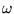
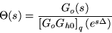
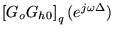
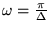
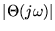
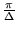

|
You are here : Control
System Design - Index | Book Contents |
Chapter 14
14. Hybrid Control
Preview
Chapter 13 gives a traditional treatment of digital control based on
analyzing the at-sample response. Generally we found that this
was a simple and problem free approach to digital control design.
However, at several points we warned the reader that the resultant
continuous response could contain nasty surprises if certain digital
controllers were implemented on continuous systems. The purpose of this
chapter is to analyze this situation and to explain:
- why the continuous response can appear very different from that
predicted by the at-sample response
- how to avoid these difficulties in digital control
The general name for this kind of analysis where we mix digital control
and continuous responses is "hybrid control".
Summary
- Hybrid analysis allows one to mix continuous and discrete time
systems properly.
- Hybrid analysis should always be utilized when design
specifications are particularly stringent and one is trying to push
the limits of the fundamentally achievable.
- The ratio of the magnitude of the continuous time frequency
content at frequency 
to frequency content of the staircase form of the sampled
output is

- The above formula allows one to explain apparent differences
between the sampled and continuous response of a digital control
system.
- Sampling zeros typically cause
 to fall in the vicinity of
,
i.e.

increases at these frequencies.
- It is therefore usually necessary to ensure that the discrete
complementary sensitivity has been reduced significantly below 1 by
the time the folding frequency,
,
is reached.
- This is often interpreted by saying that the closed loop bandwidth
should be 20%, or less, of the folding frequency.
- In particular, it is never a good idea to carry out a discrete
design which either implicitly or explicitly cancels sampling zeros
since this will inevitably lead to significant intersample ripple.
|